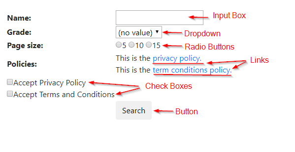
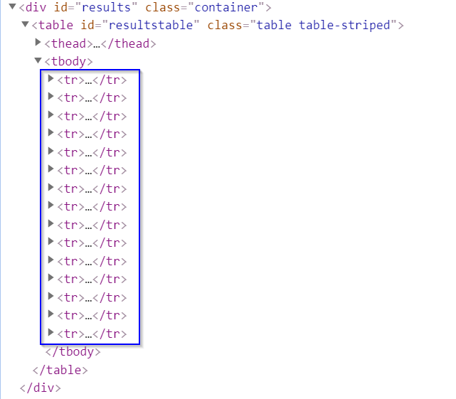

driver.find_element_by_id('search_name').send_keys("A")Filling in Web Forms
Web forms are ubiquituous when surfing the internet. A web form comprises web elements such as input boxes, check boxes, radio buttons, links, drop down menus, and submit buttons to collect user data. To process web forms, we need to first find these web elements and then take subsequent actions on them like selecting a value or entering some text. Selenium has an API that helps us to do that. Since we have covered how to find web element(s) using Selenium selectors in the previous chapter, this chapter focuses on accessing forms in Selenium: performing actions on and interacting with the forms. Let us see how different actions can be performed on each type of web field that may be involved in a web form. We use this dynamic complete search form webpage to illustrate most of the examples used in this chapter. Below is a screenshot of how this website uses forms:

Input box
The input box is the text box that displays user input. To handle any input box, we must be able to enter information, clear information or get information from the box. To enter text into a textbox we can use the send_keys() method, which would input the user required text from our automation script. The following code enters the student name starting with “A” into a text box whose ID is “search_name”:
To clear pre-entered text we can use the clear() method. For example:
driver.find_element_by_id('search_name').clear()If we need to validate some existing text, we can fetch text already in a text box using the get_attribute() method:
nameText = driver.find_element_by_id('search_name').get_attribute("value")Check box
A check box is a small box that enables us to check or uncheck it. To select or check a value we use the click() method. It simply changes the state from unchecked to checked and vice-versa. For example, the code below clicks on the Accept Privacy Policy checkbox:
driver.find_element_by_id('privacypolicy').click()Dealing with checkboxes is not always so straightforward. We may need to select a checkbox only when it is not selected already. Or, we may want to deselect a checkbox only when it is already selected. If we are trying to select a checkbox, but we perform a click operation on an already selected checkbox, then the checkbox will be deselected; something we do not want to happen. So, we first need to validate whether the checkbox is selected or not. To get the current state of the checkbox we can use one of two methods: is_selected() or get_attribute("checked"). For example, using is_selected():
privacy_boolean = driver.find_element_by_id('privacypolicy').is_selected()
print(privacy_boolean)
print(type(privacy_boolean))This will return a boolean value. This means if the checkbox is checked we would get a True value else we will get False value. Alternatively, using get_attribute("checked"):
privacy_other = driver.find_element_by_id('privacypolicy').get_attribute("checked")
print(privacy_other)
print(type(privacy_other))This will return True if the checkbox is selected, but will return NoneType if the checkbox is not selected. The following code shows how to deselect a checkbox only when it is selected:
driver.find_element_by_id('privacypolicy').click()Link
A link redirects us to a new web page or a new pop-up window or a similar thing. We can use two mechanisms to navigate to a new screen or a new pop up or a new form: we can either do a click action on a link element we find, or get the new URL from the link element we find and then navigate to it. Here is an example of operating the link embedded in the example webpage using the first mechanism:
driver.find_element_by_id("privacy_policy").click()A link’s URL is generally embedded in the link element we find with a <a> tag name as the "href" property. Instead of directly clicking on the link, we can use the get_attribute() method. Here is the same example using the second mechanism:
privacy_object = driver.find_element_by_id("privacy_policy")
privacy_link = privacy_object.get_attribute("href")
driver.get(privacy_link)Dropdown
A dropdown is a list which has an arrow at the rightmost end to expand and show values. It provides a list of options to the user, thereby giving access to one or multiple values as per the requirement. To work with a dropdown, first we need to select or find the main element group and then go inside further and select the sub-element that we want to capture. The Selenium Python API provides the Select class, which allows us to select the element of our choice. Note that the Select class only works with tags that have <select> tags. We can select a sub-element of the dropdown using: 1) index, 2) value, or 3) text.
If the dropdown has an "index" attribute, then we can use that index to select a particular option. We need to be careful when using this approach, because it is not uncommon to have the index start at 0. We can use the select_by_index() method to select an option using the "index" attribute. For example, we want to select the 5th grade students:
grade_dropdown = Select(driver.find_element_by_id("search_grade"))
grade_dropdown.select_by_index(6)If the HTML mark-up defines an <option> tag, then we can use the value matching the argument. Suppose the HTML for dropdown is like this:
<td>
<select id="search_grade">
<option selected>(no value)</option>
<option value="K">K</option>
<option value="1">1</option>
<option value="2">2</option>
<option value="3">3</option>
<option value="4">4</option>
<option value="5">5</option>
</select>
</td>We can use the select_by_value() method to select an option using the "value" attribute.
grade_dropdown.select_by_value("5")Probably the easiest way of selecting a sub-element is to select an element using the text of the dropdown. We have to match the text that is displayed in the dropdown using the select_by_visible_text() method. For example:
grade_dropdown.select_by_visible_text("5")In a similar way, we can deselect any selected value from the dropdown using any of the following options: 1) deselect_by_index(), 2) deselect_by_value(), or 3) deselect_by_visible_text(). These methods can be used only when we make multiple selections. The deselect_all() method clears all the selected options. This is also only applicable when there are multiple selections. If we try to use this when there is a single selection, it will throw a NotImplementedError exception.
There are times while performing Selenium automation of our web app, where we need to validate the options coming in our dropdown list. The Select class provides property methods that allow us to do this. The first two property methods are applicable when we can select multiple options.
.all_selected_options— Get the list of all the selected options.
.first_selected_option— Return the first option that has been selected from the dropdown and unlike the above method it would return a single web element, not a list.
.is_multiple— ReturnTrueif the dropdown allows multi-selection and returnNoneTypeotherwise.
.options— Get a list of all available options in a dropdown.
Demos
Using our dynamic complete search form webpage, we will examine a simple program that handles all the types of form elements we have covered so far. Second, we will examine an advanced program that handles the situation where we will need to access this form not once but many times sequentially.
Fill in the form once
Suppose that we want to search all the 5th grade students whose names start with “A” and page size set at 5. The program below demonstrates how to fill in the form and submit it to the server. We start with importing the packages we need for the task. We especially need to import Select module because we need to select the 5th grade from a dropdown menu.
from selenium import webdriver
from selenium.webdriver.support.select import SelectWe next need to go through the set-up steps, including creating a Chrome WebDriver instance and then using it to load the example website of a search form. Details of the set-up procedure is covered in section 4.1.
driver = webdriver.Chrome('YOUR_PATH_TO_chromedriver.exe_FILE')
form_url = "https://iqssdss2020.pythonanywhere.com/tutorial/form/search"
driver.get(form_url)We then input “A” into the text box whose ID is “search_name”:
driver.find_element_by_id('search_name').send_keys("A")Next, we select the 5th grade from the dropdown menu whose ID is “search_grade”:
Select(driver.find_element_by_id("search_grade")).select_by_visible_text("5")We then set the page size at 5.
driver.find_element_by_id('p5').click()We then check the two policy condition checkboxes:
driver.find_element_by_id("privacypolicy").click()
driver.find_element_by_id("termsconditions").click()Finally, we submit the information we have filled in the search form to the server:
driver.find_element_by_id("search").click()Fill in the form many times
Now suppose that we want to search all the students. This will require us to fill in the form many times, each time with changing input. We have to first play with the website to see if the form webpage will be refreshed every time we access it. This will determine how we are going to write our code. If the form page is refreshed every time we access it, then we have to refill all the form fields each time even if most of those fields are repetitive inputs. The program below shows an example of this use-case.
We first wrap the code of filling in the form only once into a separate function called as fill_in_form_once() with three parameters – the driver object, the first letter of a student’s name, and the grade. We need to have the latter two parameters to the function because each time we fill in the form we fill in the changing input in these two fields but fill in the same input in all other fields.
def fill_in_form_once(driver, letter, grade):
driver.find_element_by_xpath('//*[@id="search_name"]').send_keys(letter)
driver.find_element_by_xpath('//*[@id="search_grade"]/option[{}]'.format(grade)).click()
driver.find_element_by_id('p5').click()
driver.find_element_by_id("privacypolicy").click()
driver.find_element_by_id("termsconditions").click()
driver.find_element_by_xpath('//*[@id="search"]').click()
time.sleep(5)
return driverOnce we submit our form, normally we will get a result table on a page with each row representing a student record that satisfies the search criteria. So, we write down another separate function called as scrape_table_this_page() that scrapes all student records in the table on this page. It takes the driver object as the parameter and returns all student records in the result table on this page, stored in a list of dictionaries. Section 4.3.1 covers details of how to scrape a table.
def scrape_table_this_page(driver):
students_this_page = list()
table = driver.find_element_by_xpath('//*[@id="results"]/table')
entries = table.find_elements_by_tag_name("tr")
for i in range(1, len(entries)):
student_dict = dict()
cols = entries[i].find_elements_by_tag_name("td")
student_dict["name"] = cols[0].text
student_dict["grade"] = cols[1].text
student_dict["gpa"] = cols[2].text
students_this_page.append(student_dict)
return students_this_pageNow, we put all these things together and write a complete program. We start with importing the packages needed for the task and going through the set-up procedure as usual:
from selenium import webdriver
import time
import string
import pandas as pd
driver = webdriver.Chrome('YOUR_PATH_TO_chromedriver.exe_FILE')
searchAddress = "https://iqssdss2020.pythonanywhere.com/tutorial/form/search"
driver.get(searchAddress)
time.sleep(2)The code then moves to the main function. We first create a list to store the final search result. We use a double loop in which we loop over each grade for a given letter and then loop over each letter. In the inner most loop, we call function fill_in_form_once() with a given grade for a given letter, which fills in all the fields of the form and submits it to the server.
It does not guarantee that every search will return any student records that satisfy the search criteria. So, we use try and except (the outer pair) to handle the situation when there is no result returned.In either case, when a single search is over, we refresh the search form (driver.get(searchAddress)) and go to the next new search.
Then let us focus on what happens inside the while loop. We first scrape all student records in the result table on one page by calling the scrape_table_this_page() function, and append the results on the final list of result. Because we set the page size at 5, five rows will show up on a page. So, if more than 5 student records satisfy the search criteria, the search result will have multiple pages. We do not know in advance about how many pages there are. This is why we use a while loop instead of a for loop.
We only know that we can move to the next page except that either the result is contained in a single page or the current page is the last page. We use the try and except pair inside the while loop to handle the situation when there is no next page. In the case that there is no next page, we break out of the while loop because we have reached the end of the results for this search. We either have scraped all results that are contained in a single page or have moved to the last page page-by-page and scraped all results.
students = list()
for letter in string.ascii_uppercase:
for grade in range(2,8):
driver = fill_in_form_once(driver, letter, grade)
try:
while True:
students_this_page = scrape_table_this_page(driver)
students.extend(students_this_page)
try:
driver.find_element_by_xpath('//*[@id="next"]').click()
time.sleep(2)
except:
break
driver.get(searchAddress)
time.sleep(2)
except:
print("No results for letter {} at grade {}".format(letter, grade - 2))
driver.get(searchAddress)
time.sleep(2)Finally, we store the list of final results into a Pandas data frame and close our driver.
students_df = pd.DataFrame.from_records(students)
print(students_df)
driver.close()Lines of code in this program — driver.get(searchAddress) — indicate that the form will be refreshed whenever we finish the current search. This could happen either when we find out there is no result for this search or when we have scraped the results for this search. Since the form is refreshed every time for a new search, we need to refill the form every time when a new search starts. This is why we call the fill_in_form_once(driver, letter, grade) function that executes the form filling actions from the most inner layer of the for loop.
To know what we need to input for a new search, we have to find out where the search has gone so far up to this point when the form is refreshed for a new search. We control the moving of rounds of search by using the indexing of a list. We put all the options for a form field into a created list with the exact order of the list elements as that being displayed in the form field. When we loop through this list, we control where the search runs through. In the above example, lines of code — for letter in string.ascii_uppercase and for grade in range(2,8) — play this role. They control the indexing of the name list and the grade list. The name field and the grade field are the only two fields whose input values will change for a new search. This is why we need to create a list for them and then loop over it rather than doing the same thing for all the other form fields.
Another scenario is that the form page is not refreshed for a new search. In this case, then we do not need to refill the form fields that will not change their values in a new search. Below is the program that performs the same task –– search all students –– but in the use-case where the form is not refreshed. Some chunks of code are repetitive of the last program, so I just show the part of code that is different as below:
students = list()
driver.find_element_by_id('p5').click()
driver.find_element_by_id("privacypolicy").click()
driver.find_element_by_id("termsconditions").click()
for letter in string.ascii_uppercase:
driver.find_element_by_xpath('//*[@id="search_name"]').clear()
driver.find_element_by_xpath('//*[@id="search_name"]').send_keys(letter)
for grade in range(2,8):
driver.find_element_by_xpath('//*[@id="search_grade"]/option[{}]'.format(grade)).click()
driver.find_element_by_xpath('//*[@id="search"]').click()
time.sleep(5)
try:
while True:
students_this_page = scrape_table_this_page(driver)
students.extend(students_this_page)
try:
driver.find_element_by_xpath('//*[@id="next"]').click()
time.sleep(2)
except:
break
except:
print("No results for letter {} at grade {}".format(letter, grade - 2))There is no code in this program that refreshes the form page. We put the lines of code that fill in the constant form fields outside of the loop so that those constant fields will not be refilled in every time for a new search. The change of the positions of relevant lines of the code comparing the program in the first scenario reflects this idea.
For the form fields with changing input, like student name and grade, I pull the part of code that inputs a student name out of the most inner loop and put it in the outer loop because for a given first letter of a student name, only the grade field changes in a search and we do not need to refill the name field. When the name field needs to be updated in a search, we have to first clear the input box since in this case the search form is not refreshed.
ElementNotInteractableException
In some cases when the element is not interactable, actions on it as introduced in the above sections do not work and we are likely to encounter an ElementNotInteractableException. This is caused when an element is found, but we cannot interact with it — for example, we may not be able to click or send keys. There could be several reasons for this scenario:
- The element is not visible / not displayed.
- The element is off screen.
- The element is behind another element or hidden.
- Some other action needs to be performed by the user first to enable the element.
There are strategies that may work to make the element interactable, depending on the circumstance.
Wait until clickable
If the element has not been fully downloaded yet, we can wait until the element is visible / clickable. Look at the following example in which we want to get the profile for the 5th grade student named “Adams”. We first fill in the search form with letter “A” and grade 5 and submit it to the server, as before. This part of code is already provided under the section “Fill in the form once”. After we submit the search form to the server, Normally, we will get a result table returned. We then need to locate the link to the profile of stduent “Adams” in the result table. Below is how we continue to code this after submitting the search form. This is the set up chunk of code:
driver.find_element_by_id("search").click()
table = driver.find_element_by_xpath('//*[@id="results"]/table')
entries = table.find_elements_by_tag_name("tr")
fields = entries[1].find_elements_by_tag_name('td')
fields[3].find_element_by_tag_name("a").click()The above code produces an error message — "no such element: Unable to locate element" — because the result table has not been fully downloaded yet. Selenium WebDriver provides two types of waits to handle it –– explicit and implicit wait. The time.sleep() method is an explicit wait to set the condition to be an exact time period to wait, as the code below shows:
import time
driver.find_element_by_id("search").click()
time.sleep(3)
table = driver.find_element_by_xpath('//*[@id="results"]/table')
# same as the set up chunk of code
...As discussed in the previous chapter, a more efficient solution would be to make WebDriver wait only as long as required. This is also an explicit wait but more efficient than time.sleep(). The code below uses the presence of the resulting table element with id "resulttable" to declare that the page has been fully loaded:
from selenium.webdriver.common.by import By
from selenium.webdriver.support.ui import WebDriverWait
from selenium.webdriver.support import expected_conditions as EC
driver.find_element_by_id("search").click()
table = WebDriverWait(driver, 10).until(EC.presence_of_element_located((By.ID, "resulttable")))
# same as the set up chunk of code
...The final solution is to use an implicit wait, which tells WebDriver to poll the DOM for a certain amount of time when trying to find any element(s) not immediately available. The default setting is 0. Once set, the implicit wait is set for the life of the WebDriver object.
driver.implicitly_wait(10)
driver.find_element_by_id("search").click()
# same as the set up chunk of code
...Scroll until on-screen
When an element is on screen it means that it is embedded in the DOM structure of the web page. Therefore, we can find its DOM structure when inspecting a web page. If the element we act upon is not in the DOM structure, then we will see some kind of error message. Let us look at this dynamic search load webpage. Suppose that we search all the 5th grade students whose names start with “A”. If we Inspect the HTML, we can find that there are 15 table entries included under the <tbody> tag in its DOM structure, as shown in the following figure:

Suppose that we want to get the profile for student “Aiden” –– the 15th record of the page. It will work fine. But if we want to get the profile for the 16th student of the page, we will get an error message saying "list index out of range". This is because that record is off-screen. Below is the code that illustrates this example. I only highlight the lines of code that are different from the code in the set up chunk.
import time
# same as the set up chunk of code
...
form_url = "https://iqssdss2020.pythonanywhere.com/tutorial/casesLoad/search"
# same as the set up chunk of code
...
time.sleep(5)
table = driver.find_element_by_xpath('//*[@id="results"]/table')
table_body = table.find_element_by_tag_name("tbody")
entries = table_body.find_elements_by_tag_name("tr")
fields = entries[15].find_elements_by_tag_name('td')
fields[3].find_element_by_tag_name('a').click()The solution is to scroll down the page so that the off-screen records can be added into its DOM structure. In the following code, we scroll down to a certain height of the page, where “5000” is the height (line 3). By uncommenting line 4 and commenting line 3, we can also scroll down to the bottom of the page. After we scroll down the page, we also need to wait for some time so that the next part of the page can be fully downloaded.
driver.find_element_by_id("search").click()
time.sleep(5)
# scroll to a certain height
driver.execute_script("window.scrollTo(0, 5000)")
# scroll to the bottom
#driver.execute_script("window.scrollTo(0, document.body.scrollHeight);")
time.sleep(5)
# same as the last chunk of code
...Execute JavaScript
On this dynamic search form with a hidden field webpage, we can see that the form submission button is hidden. If we still use the button click() method, we will get an error message saying that "element not interactable". In this case, we can opt to execute JavaScript that interacts directly with the DOM:
# same as the set up chunk of code
...
driver.implicitly_wait(10)
form_url = "https://iqssdss2020.pythonanywhere.com/tutorial/formhidden/search"
# same as the set up chunk of code
...
driver.execute_script(f'document.getElementById("search").click();')
# same as the set up chunk of code
...Perform preliminary action(s)
Let us again search for all the 5th grade students whose name starts with “A” on this dynamic complete search form webpage. If we move our cursor over a student name, we will see a hover box showing up above the name. Suppose that we want to scrape the data on the hover box. The hover box is not actionable unless we mover the cursor to a student name to enable it. Once we do that, if we inspect the webpage, we will see the hover box element has been added to its DOM structure. So, we can scrape the data on the hover box from there. In the following code segment we scrape the content on the hover box of student “Adams”:
# same as the set up chunk of code
...
from selenium.webdriver.common.action_chains import ActionChains
# same as the set up chunk of code
...
driver.implicitly_wait(10)
# same as the set up chunk of code
...
name_tag = fields[0].find_element_by_tag_name("span")
hov = ActionChains(driver).move_to_element(name_tag)
hov.perform()
hov_id = name_tag.get_attribute("aria-describedby")
print(hov_id)
hov_text = driver.find_element_by_id(hov_id).text
print(hov_text)We first need to import the ActionChains class in Selenium WebDriver. We create an ActionChains object by passing the driver object. We then find the student name “Adams” object in the page and move the cursor on this object using the method move_to_element(). We then use the method perform() to execute the actions that we have built on the ActionChains object. In this case, this action makes the hover box appear above the student name. Once this is done, the hover box element is added to the DOM structure of the page. By inspecting this new addition in the DOM structure, we can find the ID of the hover box through attribute "aria-describedby" and therefore scrape the content of the hover box object associated with that ID.